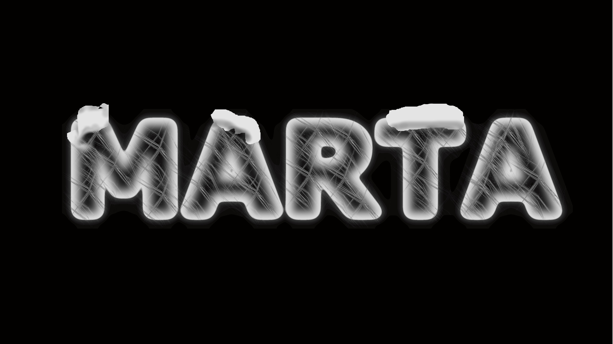

GIMP
GIMP ir attēlu rediģēšanas aplikācija,kas ir bezmaksas un atvērtā koda rastra grafikas redaktors,
ko izmanto attēlu apstrādei (retouching) un attēlu rediģēšanai, brīvas formas zīmēšanai,
dažādu attēlu failu
formātu pārkodēšanai un specializētākiem uzdevumiem. Tas ir paplašināms, izmantojot spraudņus, un skriptējams.
Tas parasti nav paredzēts zīmēšanai, lai gan mūsu klase to izmantoja arī tādā veidā.

WORD
Microsoft Word ir Microsoft izstrādāta tekstapstrādes programma.
Pirmo reizi tas tika izlaists 1983. gada 25. oktobrī ar nosaukumu Multi-Tool Word Xenix sistēmām.
Turpmākās versijas vēlāk tika rakstītas vairākām citām platformām.
WORD ir oficiālā tekstapstrādes programma, ko izmantojām arī mēs. Par to mums bija PD 22.11.2025